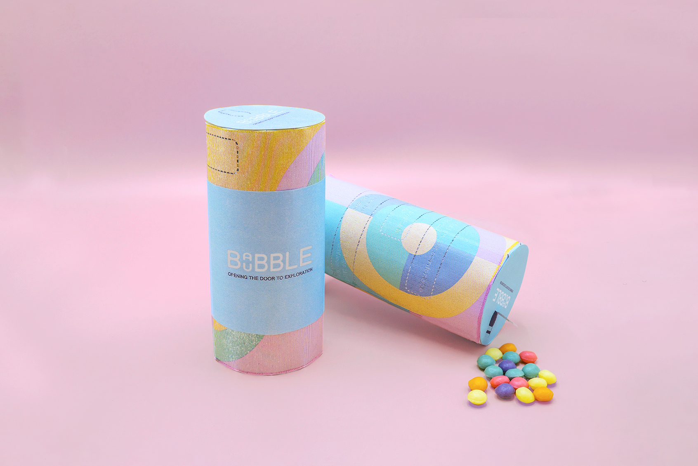
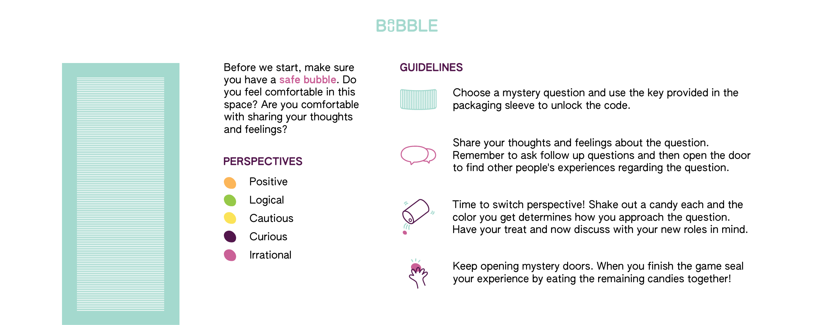
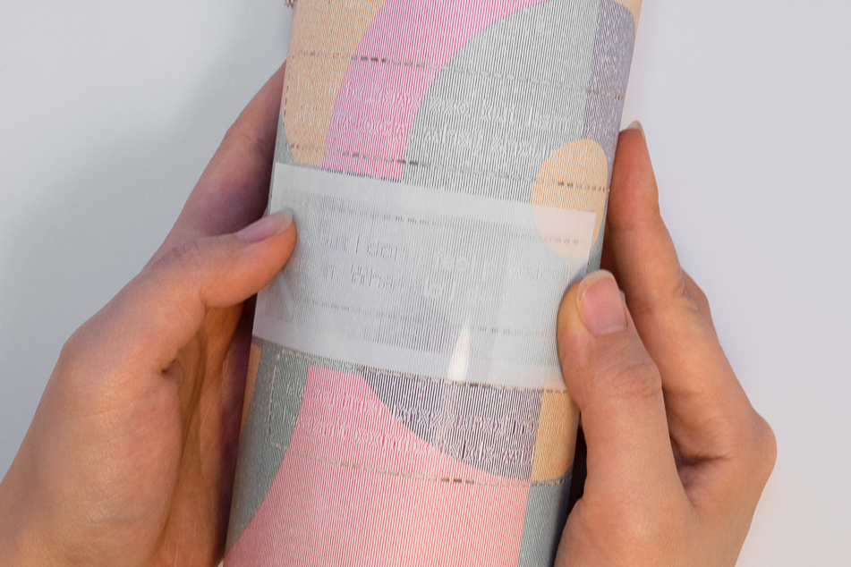
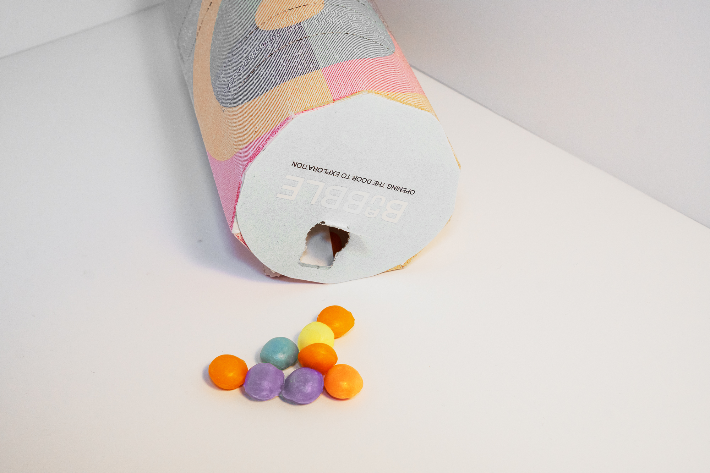

How can we promote autonomy, competence, and relatedness whilst opening conversations on sensitive topics?
Adolescents solve a puzzle on the packaging to access discussion questions, where players share thoughts and feelings while asking follow-up questions of each other. Colored candies correspond to different perspectives, enabling participation without revealing personal viewpoints if uncomfortable.
Hidden cards behind doors feature anonymous adult experiences tied to each question, helping children challenge biases and find relatable narratives rather than receiving prescriptive guidance.

Global sex education emphasizes risk prevention over open dialogue.
Sex education curricula worldwide focus on risk prevention, creating associations with negative emotions — disgust, fear, and shame — rather than fostering open conversations about communication, boundary-setting, body image, and the emotional dimensions of sexuality.
The intervention needed to meet adolescents where they already are: in everyday social situations, with food and play as natural entry points for conversation.
Autonomy
Colored candies let players represent perspectives without revealing personal viewpoints, removing pressure to self-disclose.
Competence
A puzzle on the packaging must be solved to access the game — rewarding engagement before discussion begins.
Relatedness
Hidden cards feature anonymous adult experiences tied to each question, helping players find relatable narratives rather than prescriptive guidance.


Packaging design with embedded puzzle to unlock the game.
Eating creates a positive opportunity for initiating conversations.
The game integrates snacks with gameplay to foster discussions about communication, boundary-setting, body image, and the emotional dimensions of sexuality. The snack format increases engagement and approachability — sharing food is a universal social ritual that lowers barriers to sensitive conversation.
Materials were kept deliberately accessible: recyclable cardboard and wax paper for affordability, enabling adolescents to purchase independently without relying on adult intermediaries.



Increasing engagement, self-consciousness, perspective-taking, and empathy.
Babble Bubble's design targets four psychological outcomes: increased engagement with difficult topics, heightened self-consciousness in a productive sense, active perspective-taking, and the development of empathy. By embedding these mechanisms in a playful, food-based format, the game creates a low-stakes environment for conversations that are often avoided in both home and school settings.